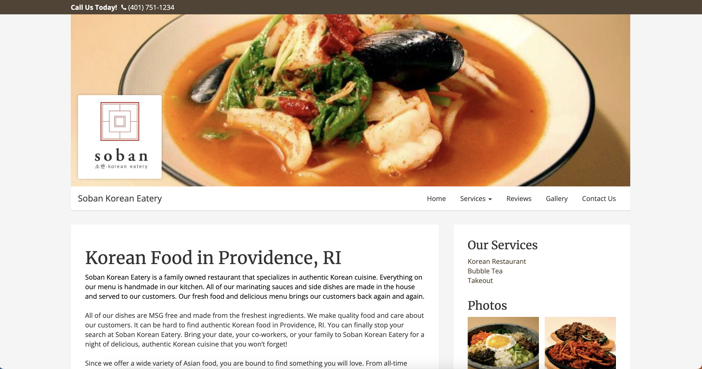
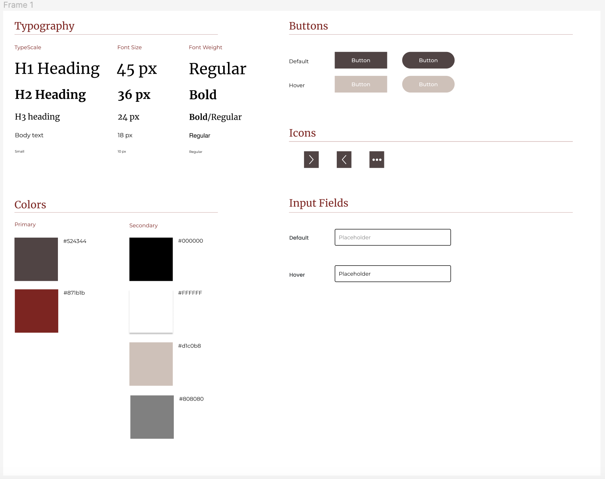

Students at Brown University are constantly searching for the next restaurants to try out around the Providence area. Oftentimes, a website that properly shows off the best dishes a restaurant has to offer can be the deciding factor as to whether potential patrons choose to dine at the restaurant or not.
Soban Korean Eatery
https://www.sobankoreaneatery.com/
With many of the popular Providence restaurants already having a professionally designed website, I felt that Soban Korean Eatery, a local restaurant located on Thayer Street, lacked the same sophisticated and modern website. As a regular customer at Soban, I was intrigued by the opportunity to redesign their website.
Although the website was, overall, fairly usable, there were a few issues that I noticed when navigating the site:
For the most part, the current Soban website performed fairly well on accessibility softwares, including scoring an accessibility rating of 93 via a Lighthouse report. When using WebAIM WAVE, the primary errors it pointed out were related to missing form labels for the “Contact Us” form submission located in the footer of the homepage. I agree with these accessibility concerns because by not having proper HTML labels on the form's input lines, screen readers will have a more difficult time conveying the hierarchical HTML structure of the website to potential visually impaired users.
The first step of the redesign process was to draw speed sketches encompassing nine distinct design ideas and then synthesize the best parts of each of them into a final sketch that would serve as the basis for the Lo-Fi and Hi-Fi Figma designs.
The initial Figma renderings of the Lo-Fi wireframes (without colors) took on the task of how to adjust the desktop design to still be a suitable UI on smaller tablet and phone screens.
The next step of the redesign process was to come up with the exact colors, font families, and buttons/icons that would replace the black-and-white Lo-Fi renderings. A visual design style guide was created with this information to better inform the creation of the Hi-Fi mockups.
The style guide elements were finally then applied to the Lo-Fi wireframes to create Hi-Fi mockups that would closely resemble the final redesigned website. Mockups were similarly created for the three primary screen sizes (desktop, tablet, and phone).
https://azhou76.github.io/responsive-redesign/
Lastly, the Hi-Fi Figma mockups were translated into a responsive website using HTML and CSS and deployed using GitHub pages. Media queries and aria labels were used to improve responsiveness and accessibility, respectively, and extensive testing using Developer Tools was performed to ensure all screen sizes in the range of phone screens to larger computers could adequately serve the website's design. Finally, WebAIM WAVE and Lighthouse were used to ensure proper accessibility within the redesigned website. The redesigned website scored similarly to the original in terms of its Lighthouse score, and it had fewer errors than the original when using WAVE.
Although, oftentimes, there is a heavy emphasis by software engineers to have a very clean desktop view of a website, early-stage testing and designing is critical to ensuring that people accessing the mobile version of the website can still use and leverage the various components the website has to offer. Having never really used Figma to guide a website redesign before, I found that having this reference when actually coding the website was an incredibly helpful guide that made the programming phase significantly easier and more streamlined. Furthermore, this exercise allowed me to also compare and contrast the aspects of a restaurant's website that I felt were essential to include in high visibility locations and what items were non-essential for the homepage. Overall, I am more aware of how users view a website's usability, which is sometimes the opposite of how a developer views it.